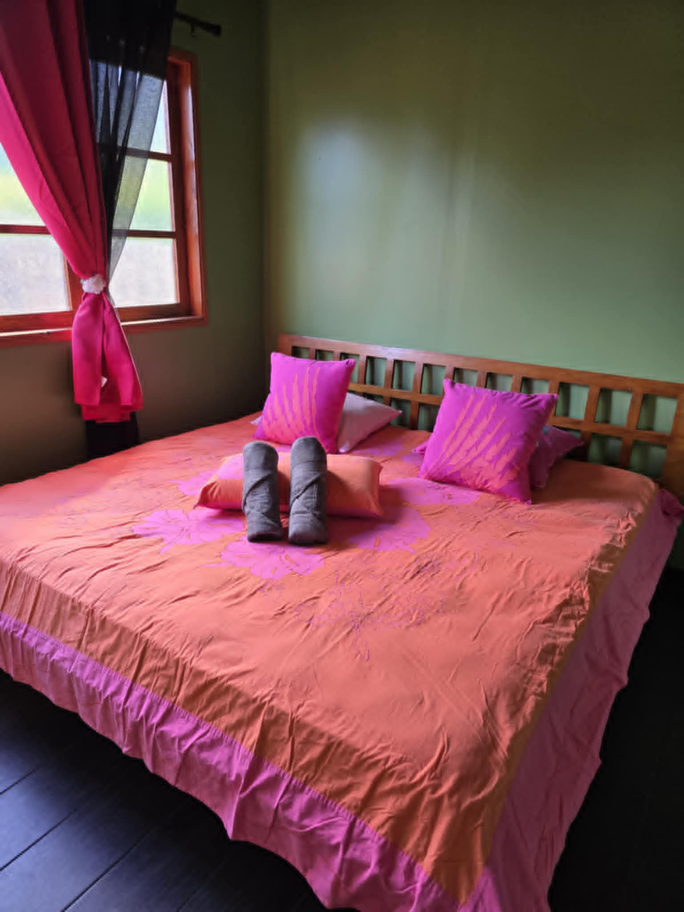
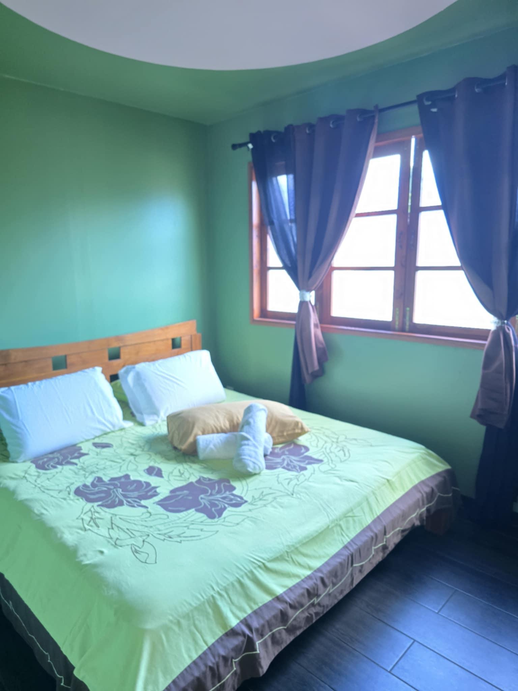
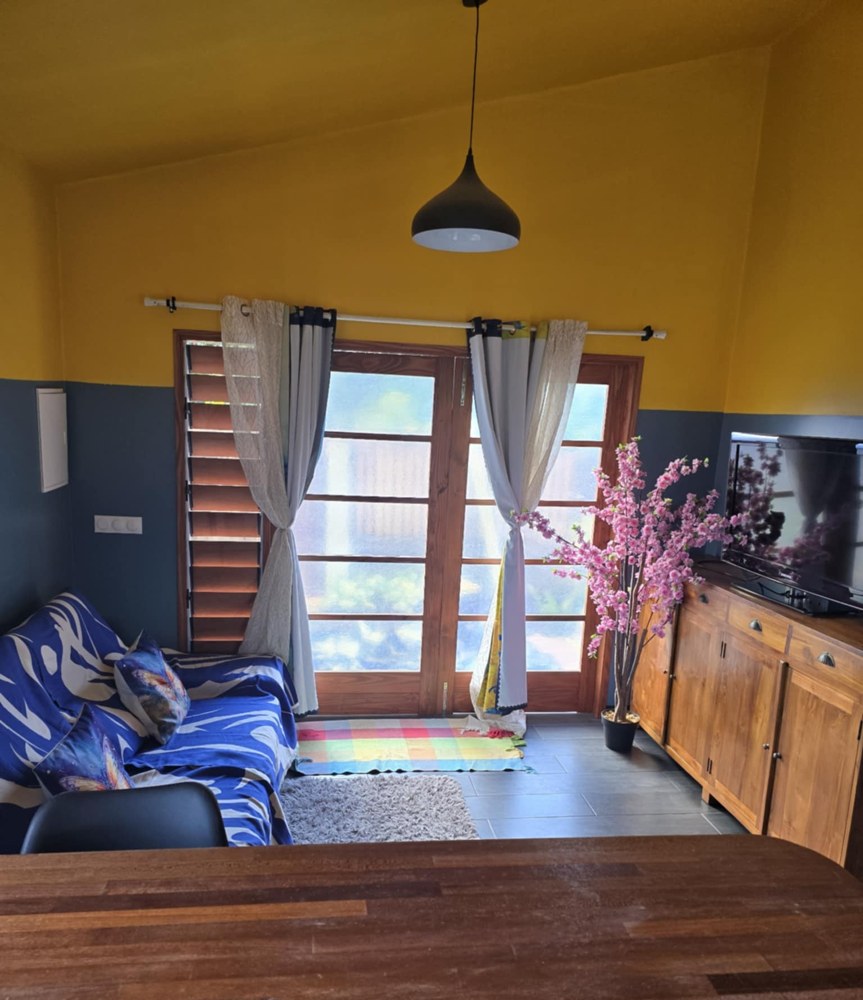
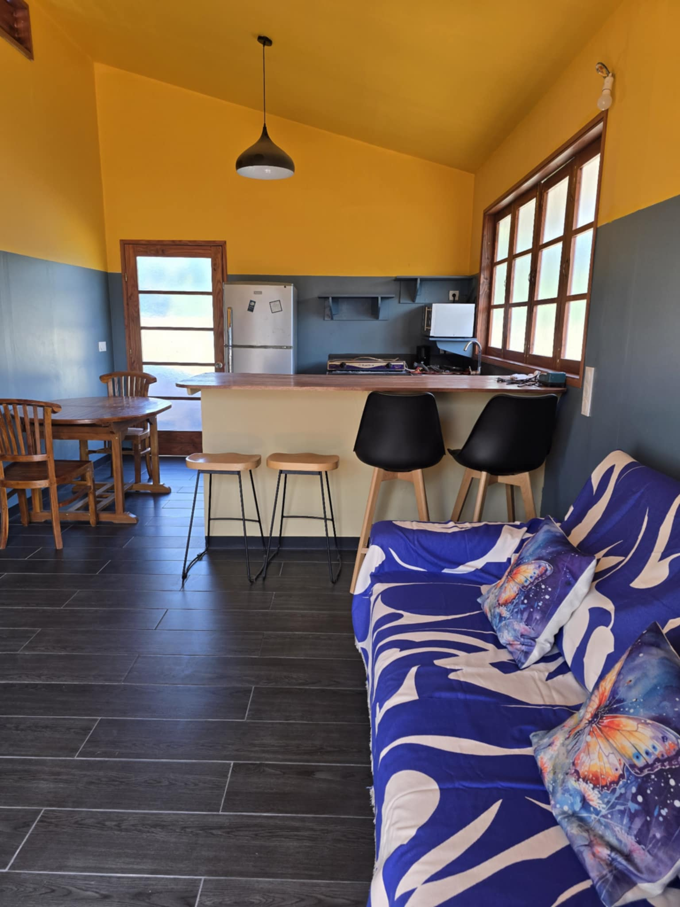
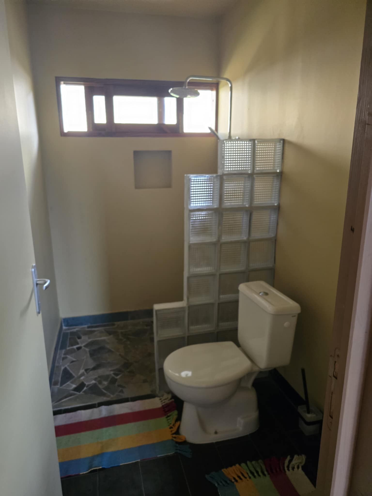

🏡 Un petit havre de paix entre mer et montagne
🛌 2 chambres confortables – lits Queen Size
🍽️ Cuisine équipée
📶 Wifi inclus
🧺 Linge de maison fourni
🚗 Parking privé (1 véhicule)
❌ Animaux non acceptés
🏖️ À deux pas de la plage !
🕒 Horaires
• Arrivée : 14h00
• Départ : 11h00
💸 Tarifs
• 18 000 XPF / nuitée (2 nuits minimum)
• 15 000 XPF / nuitée (long séjour)
📞 Réservations & infos
📱 +689 87 39 88 04
📧 fareninamuvairao@gmail.com
📘 Facebook : Fare Ninamu Vairao